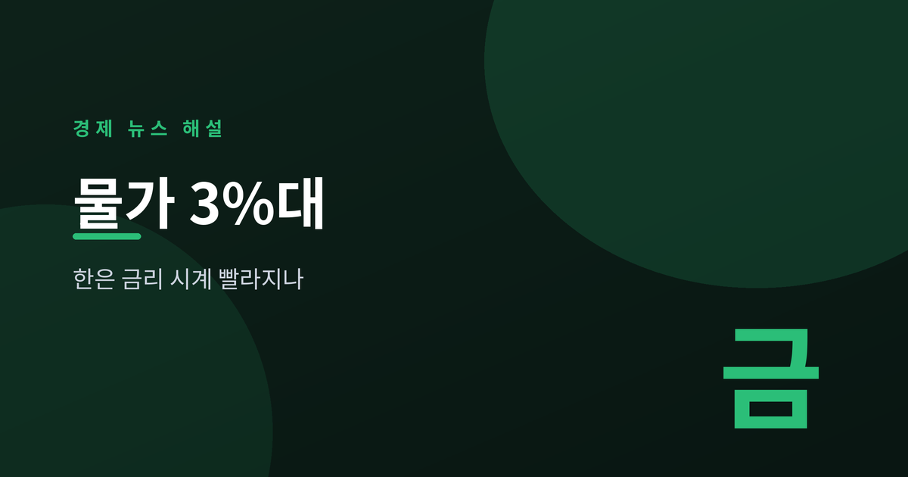
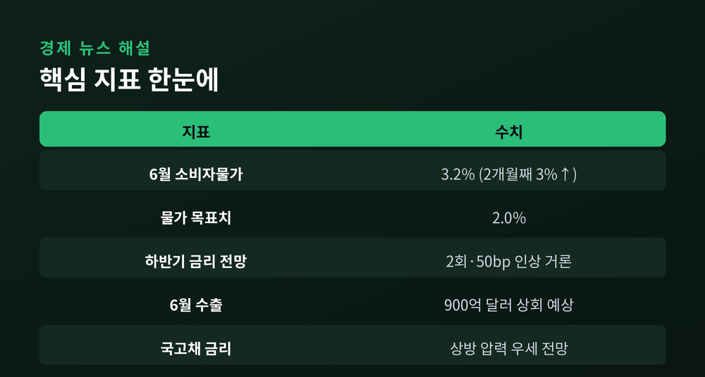
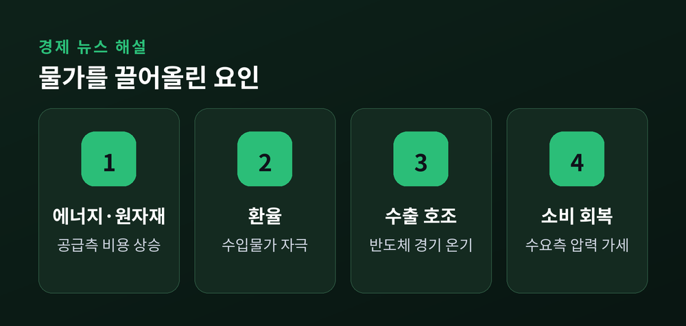
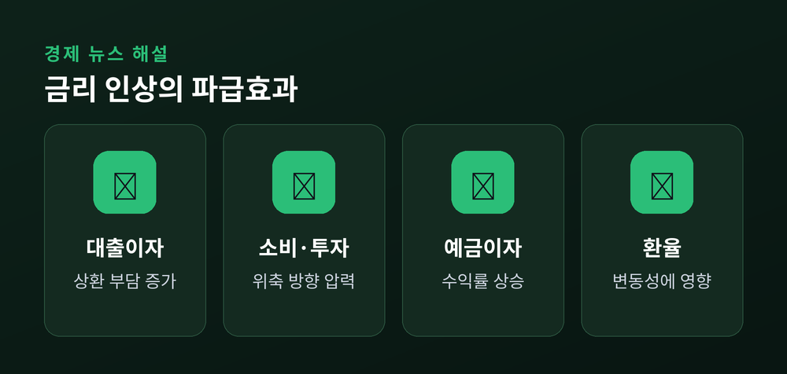
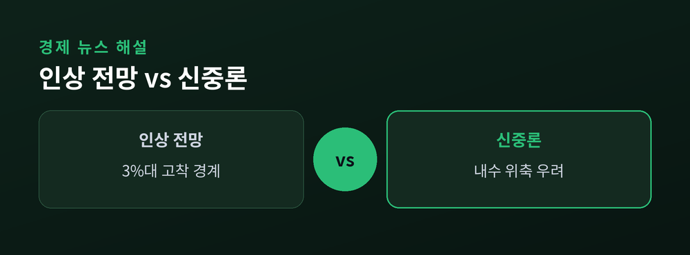

2026 하반기 통화정책 전망

6월 소비자물가 상승률이 3.2%로 집계됐습니다.
두 달 연속 3%를 넘긴 숫자입니다.
자연스레 시선은 한국은행의 다음 선택으로 향합니다.
물가가 다시 화두가 됐습니다.
통계상 6월 소비자물가 상승률은 3.2%로, 5월에 이어 두 달째 3%를 웃돌았습니다.
목표치 2%와는 여전히 거리가 있습니다.
한국은행의 고민이 깊어졌습니다.
자본시장연구원 등 일부 기관은 하반기 기준금리가 두 차례, 합쳐서 50bp가량 오를 가능성을 전망으로 제시했습니다.
확정된 경로가 아니라, 지표가 지금 흐름을 이어갈 경우를 가정한 시나리오입니다.
국고채 금리도 이를 반영하는 분위기입니다.
수출과 물가 지표의 온기가 이어지면서, 상방 압력이 우세할 것이라는 관측이 나옵니다.

배경에는 공급과 수요, 두 갈래가 함께 있습니다.
어느 하나로만 설명하기는 어렵습니다.
공급 쪽에서는 에너지와 원자재, 환율 같은 비용 요인이 물가를 밀어 올립니다.
수요 쪽에서는 경기 온기가 소비를 데웁니다.
실제로 경기 지표는 나쁘지 않습니다.
반도체 수출 호조로 6월 수출액은 900억 달러를 넘어설 것으로 예상됩니다.
코스피가 사상 최고점을 새로 쓴 점도 같은 맥락에서 읽힙니다.
성장은 버텨주는데 물가가 오르는 조합입니다.
금리를 올릴 명분이 조금씩 쌓이는 환경인 셈입니다.

기준금리 인상은 우리 생활 곳곳으로 번집니다.
가장 먼저 체감되는 곳은 대출 이자입니다.
변동금리 차주의 상환 부담이 늘어납니다.
소비와 투자는 위축되는 방향으로 힘을 받습니다.
반대로 예금 이자는 오르고, 환율에도 영향을 줍니다.
물가를 잡는 데는 도움이 되지만, 대가도 따릅니다.
정책은 늘 이 사이에서 균형을 찾는 일입니다.

여기서 신중해질 필요가 있습니다.
인상을 점치는 쪽과 아직 이르다는 쪽이 모두 존재합니다.
인상론은 3%대 물가의 고착을 경계합니다.
반대편에서는 성급한 인상이 회복 중인 내수를 꺼뜨릴 수 있다고 봅니다.
결국 답은 앞으로의 지표에 달려 있습니다.
물가와 수출, 대외 여건이 어떻게 움직이느냐에 따라 경로는 갈립니다.
오를지 여부보다, 지표 흐름을 함께 지켜보는 태도가 중요한 시점입니다.
지금은 단정하기보다 점검할 때입니다.
내 대출의 금리 구조와 상환 여력을 한 번 확인해 두시길 권합니다.

정리하면, 6월 물가 3.2%는 한국은행의 셈법을 복잡하게 만들었습니다.
하반기 인상 가능성이 거론되지만, 확정된 것은 없습니다.
경기 온기와 물가 압력 사이에서 정책의 무게중심이 어디로 기우는지가 관건입니다.
※ 이 글은 정보 제공용이며 투자 권유가 아닙니다.